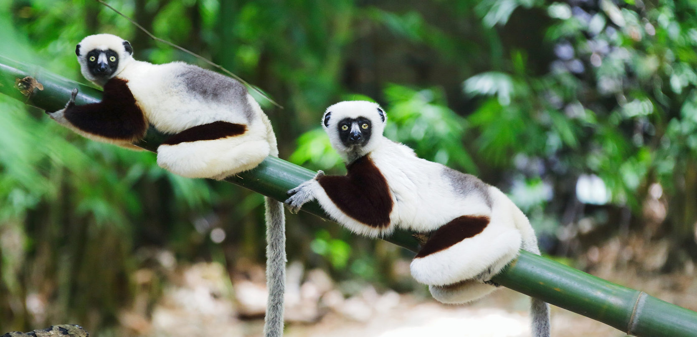

The perfect place to be

Huge island of the Indian Ocean, close to the coasts of Southeast Africa, Madagascar offers to the travelers a rich experience. Indeed, as much by the beauty and variety of its landscapes as by its mosaic of peoples, or its unique animal and plant species, the red island invites to travel and discover. Still preserved from mass tourism, the island of Madagascar with its many national parks is an incomparable travel destination.
Discovering nature
Madagascar also has several national parks rich with a unique fauna and flora in the world. This makes this island a privileged destination for eco-tourism. On the east coast, the park of Ranomafana allows you to make hikes or dugout trips on the Pangalanes canal. The park of Andasibe - Mantadia allows to observe the biggest species of lemur, the Indri, in the middle of a luxuriant vegetation of tropical forest.
Making good memories

It is also a very pleasant destination for the beach and the activities proposed by the coast. Relaxation, but also snorkeling (diving with just a mask and a snorkel) or scuba diving allow to discover the wonders of the Malagasy underwater flora. The island of Nosy Be, located in the Mozambique Channel (northwest coast of Madagascar), is a perfect illustration. Its beaches are extensive and beautiful, and activities are numerous. You can also visit the Lokobe reserve and have the chance to observe lemurs, primates found only in Madagascar.